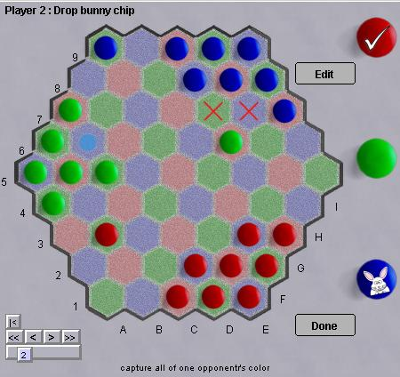

Triad
Triad est un jeu de capture à trois joueurs spécifiquement conçu pour être équilibré et pour éviter le problème de « kingmaking » courant dans les jeux à plus de deux joueurs. L'objectif est d'éliminer toutes les pierres d'un joueur, tout en conservant le maximum de ses propres pierres sur le plateau. Il en résulte que les joueurs en deuxième et troisième position ont toujours intérêt à se liguer contre le premier. L'autre caractéristique inhabituelle de ce jeu est l'ordre variable des tours. Les règles, que vous trouverez ici, sont très simples.
Triad ne peut se jouer qu'à trois joueurs. Sur Boardspace, vous pouvez jouer à trois ou à deux plus un robot.
Robots : À déterminer.
|

|